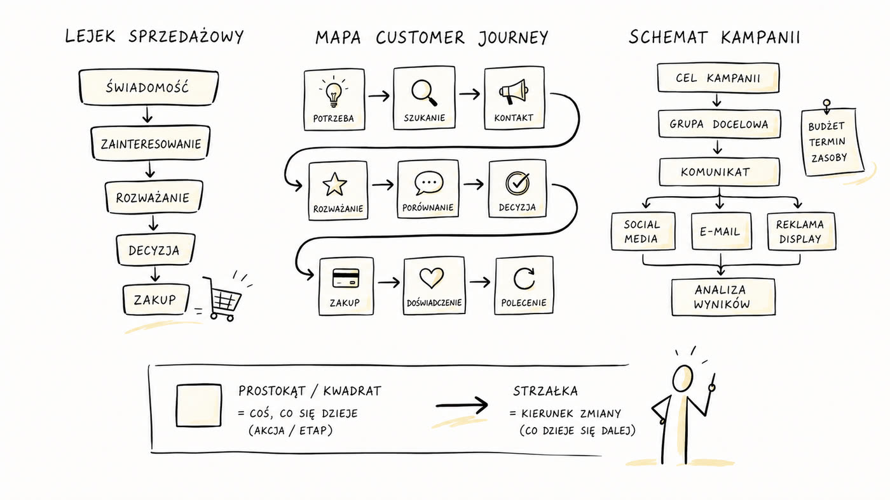
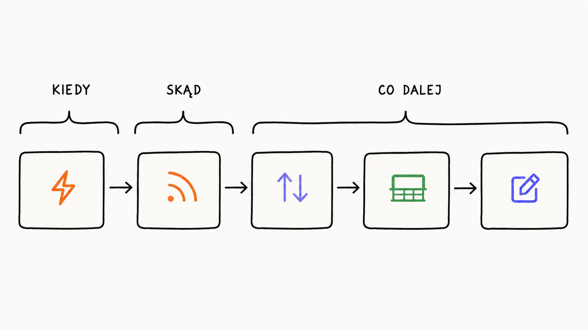
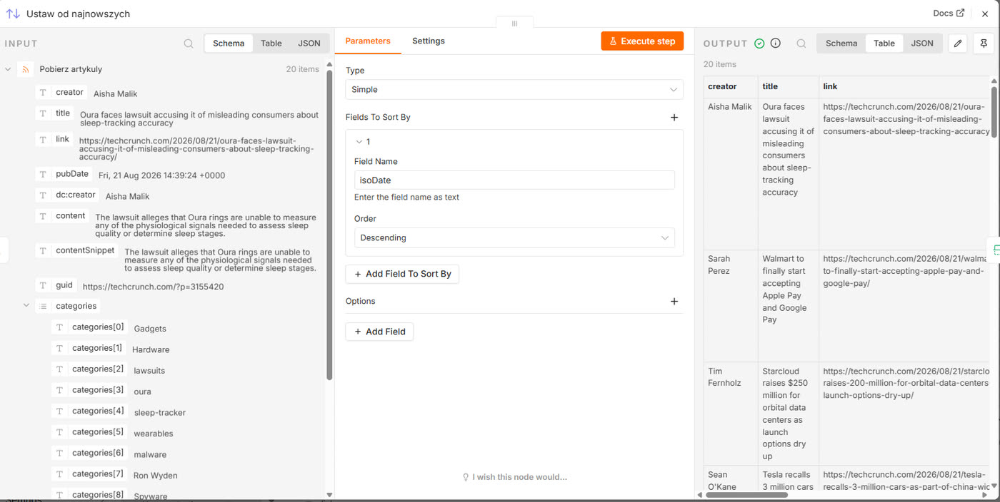

Rozdział 2
Rozdział 2. Co widzisz na ekranie
Ten rysunek widziałeś już pewnie dziesiątki razy, tylko w innym kontekście. Lejek sprzedażowy, mapa customer journey, albo schemat kampanii przypięty pinezkami do tablicy w agencji - wszystkie składają się z tego samego: prostokątów, tudzież kwadratów i strzałek pomiędzy nimi. Prostokąt albo kwadrat to zwykle coś, co się dzieje - jakaś akcja. Strzałka mówi, jaki jest kierunek zmiany - co dzieje się dalej.

Węzeł robi jedną rzecz, połączenie mówi, dokąd trafiają jej wyniki - i to właściwie cała gramatyka n8n.
n8n od schematu na slajdzie różni się jedynie tym, że te kwadraty nie tylko ilustrują pomysł, ale naprawdę coś robią, kiedy klikniesz „uruchom". W tym rozdziale nauczysz się lepiej czytać takie schematy i sprawdzać, czy to, co widzisz, zgadza się z tym, co faktycznie się dzieje.
Węzeł i połączenie
Wróćmy do przepływu, który zaimportowałeś w rozdziale 1. Jeśli go zamknąłeś, znajdziesz go na liście swoich przepływów zaraz po zalogowaniu.
Każdy z kwadratów na ekranie to węzeł. Węzeł pobiera dane, coś z nimi robi i przekazuje dalej - zawsze dokładnie w tej kolejności. Strzałka łącząca dwa węzły to połączenie: pokazuje, dokąd trafia wynik pracy z danego węzła, żeby stał się materiałem wejściowym dla węzła kolejnego.

Pierwszy węzeł w każdym przepływie ma szczególną rolę: to wyzwalacz. Wyzwalacz decyduje, kiedy cały przepływ ma się uruchomić - o określonej godzinie, po nadejściu nowego maila, po kliknięciu przycisku. Bez wyzwalacza przepływ istnieje na ekranie, ale nigdy się sam nie uruchomi.
Klik na węzeł: co weszło, co wyszło?
To jest jedyne narzędzie diagnostyczne, którego naprawdę potrzebujesz. Zapamiętaj ten mechanizm teraz - wrócisz do niego w każdym kolejnym rozdziale.
W przepływie z rozdziału 1 kliknij dwukrotnie węzeł „Ustaw od najnowszych" - do węzła wyzwalacza jeszcze wrócimy. Na ekranie zobaczysz: panel z jego ustawieniami.
Po bokach zobaczysz dwa panele danych: „INPUT" (wejście) po lewej i „OUTPUT" (wyjście) po prawej. Jeśli przepływ był już wcześniej uruchomiony, w obu zobaczysz dane - dokładnie to, co do tego węzła weszło i co z niego wyszło.
Dane możesz oglądać w trzech widokach: Schema (uproszczona struktura pierwszego elementu), Table (tabela) i JSON. Zacznij od widoku Table - dla większości przypadków, które będziemy omawiać, jest najbardziej czytelny.

Zamknij panel (X w prawym górnym rogu albo klawisz Escape) i kliknij dwukrotnie inny węzeł w łańcuchu. Na ekranie zobaczysz: panel tego węzła, z własnym „INPUT" i „OUTPUT". Sprawdź, czy jego „INPUT" wygląda tak samo jak „OUTPUT" poprzedniego węzła - powinno być identyczne, bo to właśnie robi połączenie między nimi: przenosi dane bez zmian z wyjścia jednego węzła na wejście drugiego.
Uruchamianie przepływu
Cały przepływ uruchamiasz przyciskiem „Execute workflow" (uruchom przepływ) w prawym dolnym rogu ekranu - poznałeś go już w rozdziale 1. Na ekranie zobaczysz: węzły podświetlające się kolejno, w miarę jak dane przez nie przechodzą.
Pojedynczy węzeł możesz również uruchomić osobno, bez odpalania całego przepływu. W tym celu otwórz go dwukrotnym kliknięciem. Następnie kliknij „Execute step" (wykonaj krok). Na ekranie zobaczysz: dane pojawiające się w panelu „OUTPUT" tylko tego jednego węzła, bez uruchamiania pozostałych. Przydaje się, kiedy przepływ ma np. trzydzieści różnych węzłów, a sprawdzić chcesz tylko trzeci.
Co może pójść nie tak
- Panel „INPUT" albo „OUTPUT" jest pusty, mimo że kliknąłeś węzeł. Przepływ nie został jeszcze uruchomiony w tej sesji przeglądarki - dane pojawiają się dopiero po kliknięciu „Execute workflow". Uruchom przepływ, a potem otwórz węzeł jeszcze raz.
- „Execute step" nie reaguje na kliknięcie. Upewnij się, że poprzedni węzeł w łańcuchu został już wcześniej uruchomiony przynajmniej raz - część węzłów potrzebuje prawdziwych danych z poprzedniego kroku, żeby dało się je przetestować osobno.
Wariacje na temat
Otwórz każdy węzeł w przepływie z rozdziału 1 po kolei i zanotuj jednym zdaniem, co on robi - wyłącznie na podstawie tego, co widzisz w „INPUT" i „OUTPUT".
Zmień widok danych z Table na JSON dla jednego węzła. Nie musisz rozumieć składni - zwróć tylko uwagę, że to te same dane, tylko inaczej zapisane.